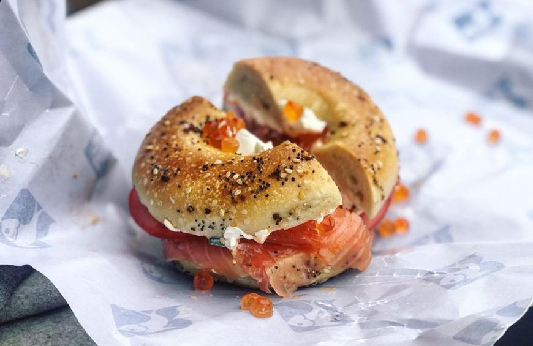

Attractions

What's not to do in New York? From upstate mountains and scenic views to city life, NY has it all. Explore Broadway, Beaches and Baseball in this one of a kind city. Take a free ferry to staten island and enjoy up close views of the Statue of Liberty.
Food
Craving a unique cuisine? New York City has everything you've been wanting. Fill your stomach's with yummy Halal cart rolls or authentic Mexican food. You have to try the Everything Bagel and typical NY pizza! Finish the meal with a hot cookie from Levain.
Hidden Gems
Finding a quiet, cozy place in the city is definitely one of the biggest challenges you'll probably face. Take a book and find a shady spot in Central Park-time will fly! Also, catch a glimpse of the Old City Hall Subway Station on the 6 train.